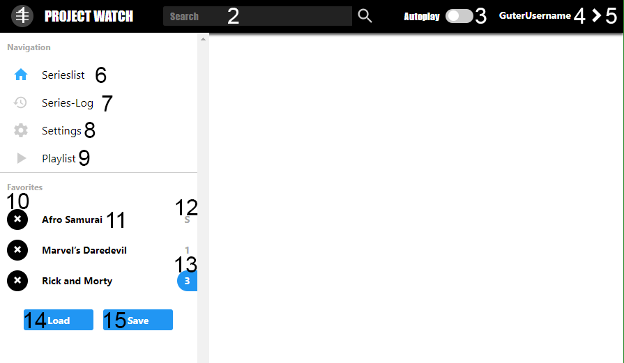
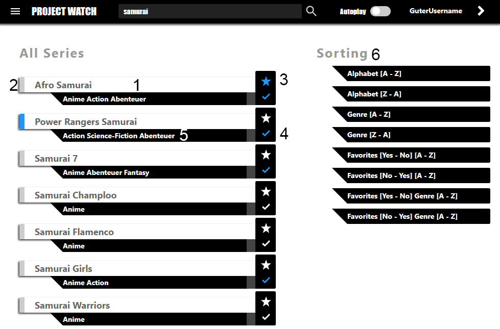
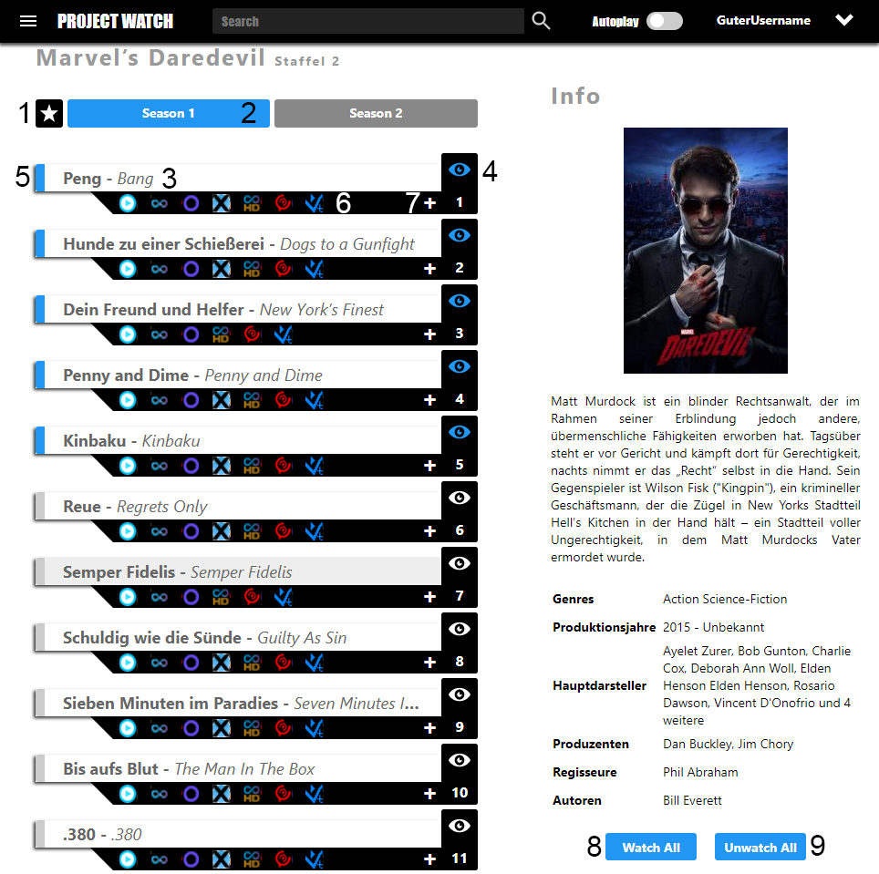
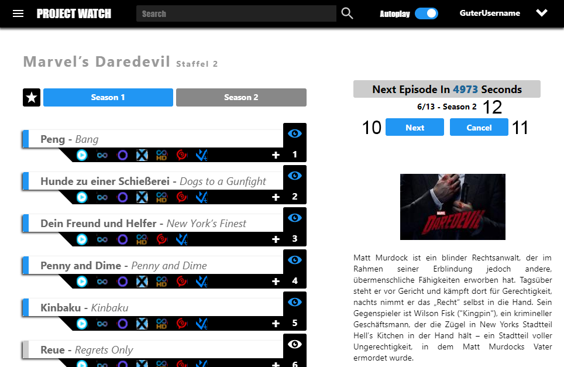

Viele Funktionen sind nur nutzbar wenn der Benutzer angemeldet ist. Daher ist zu empfehlen sich einen
Das ist ein Hybrid, halb Website- halb Speicherinformationen. Deshalb benötigt es beim Start eine Zeit zum und speichern der Informationen.
Ein Ladebalken zeigt relativ zuverlässig den stand an. Die Informationen werden alle 7 tagen aktualisiert. Dies ist in den Einstellungen einstellbar.
Gespeichert werden nur Serien und deren Informationen. Episoden sind immer auf dem neusten Stand.
Durch die Hybrid Informationen hat das Script mehr Freiheiten wie zBs. Titelbilder die in der Serienliste angezeigt werden.
Diese können durch das fahren über Graue Kästchen angezeigt werden. Durch das Klicken auf dieses wird eine Großansicht geöffnet.
Dies ist aber nur möglich wenn der User angemeldet ist.
Die Serienliste ist erst bei 3 Zeichen in der Suchleiste sichtbar.
Dies kann aber nach belieben in den Einstellungen eingestellt werden.
Die komplette Serienliste kann ab dem Start angezeigt werden wenn der Wert in den Einstellungen auf '0' stellt wird.
Die Autoplayfunktion ist das Herz des Scripts. Alles andere wurde nur darumgebaut. Bei eingeschalteten Autoplay wird
nach jeder beendeten Episode die nächste Episode nach kurzer Zeit gestartet. Dies funktioniert auch Staffelübergreifend wenn davor
die letzte Episode der davorigen Staffel geschaut wurde.
Neben dem normalen liniearen Autoplay verfügt das Script auch einen nonlineares Autoplay, die Playlist. Die Playlist kann angepasst
werden und kann unterschiedliche Episoden im Autoplay abspielen. Dabei ist die Liste nicht auf eine Serie begrenzt und kann daher jede Episode
unterschiedlicher Serien im Autoplay nacheinander abspielen. Dies benötigt aber Zeit zum hinzufügen jeder Episode.
Fast alle Knöpfe wie Favorisieren, Synchronisieren, laden der Favoriten, speichern der Favoriten und als (un)geschaut markieren sind Asynchron.
Das bedeutet die Aktion wird nicht sofort nach dem Klick ausgeführt weil dabei im Hintergrund noch daten geladen werden müssen. Das bedeutet
im endeffekt, je schneller die Internetgeschwindigtkeit desto schneller werden die Aktionen ausgeführt. Normale Latenz 100ms.
Das Menü ist zuständig für das Suchen, schalten des Autoplay, Navigieren und verwalten der Favoriten.
Dabei ist das Menü zwischen dem Haupt- und Seitenmenü aufgeteilt. Die Navigation über das Seitenmenü ist
mit der Maus als auch mit den Pfeiltasten möglich.

- Seitenmenüknopf. Zeigt das Seitenmenü an. Klickbar als auch Hoverbar. M
-
Suchleiste.
Sucht auf jeder Seite Serien. Es kann in den Einstellungen eingestellt werden dass auf der
Episodenansicht Episoden gesucht werden. Nach dem Suchbegriff kann Optional 'genre:' mit
darauffolgendem Genresuchbegriff verwendet werden. Beispiel:'marvel genre:action'. AnK AusESC.
- Autoplayschalter. Schaltet die Autoplayfunktion an oder aus. A.
- Username / Logout.
- Seitenanzeige an / aus. Schaltet die Seitenanzeige an oder Aus. Dies funktioniert auch beim ändern der Fensterbreite. TAB.
- Serienliste. Navigation zur Serienliste. ENTER.
- Serienlog. Navigation zum Serienlog. ENTER.
- Einstellungen. Navigation zu den Einstellungen. ENTER.
- Playlist. Navigation zur Playlist. ENTER.
- Favorit Löschen. F.
- Favorit. Öffnet den Favorit bei der Favorisierten Staffel. ENTER.
- Favorisierte Staffel. Zeigt 'S' an wenn die Specials Staffel Favorisiert wurde.
-
Geschaut-Anzeigte (Farbe).
Zeigt an ob alle Folgen der Serie angeschaut wurden.
Dies zeigt auch an ob eine neue Folge verfügbar ist. Es wird nur geprüft ob eine neue Episode verfügbar ist wenn der Benutzer angemeldet ist.
Auch wird nur geprüft wenn die komplette Serie angeschaut ist (Einstellbar, ist aber unsinnig und verschwendet resourcen), die Serie aufgerufen wird oder
der Synchronisierenknopf in der Serienliste gedrückt wird..
-
Ladenknopf.
Lädt alle Favoriten die auf dem Account des Benutzers gespeichert wurden. Geladen wird immer die erste Staffel.
Nur möglich wenn der Bnénutzer angemeldet ist.
- Speichernknopf. Speichert alle Favoriten auf dem Account des Benutzers. Speichert keine Staffeln. Nur möglich wenn der Benutzer angemeldet ist.
Die Serienliste zeigt alle Serien die zu verfügung stehen an. Ab drei Zeichen in der Suchleiste werden Ergebnisse angezeigt.
Dies ist in den Einstellungen einstellbar. Bei '0' Zeichen in den Einstellungen wird am Start die komplette Liste angezeigt. Dies hat aber Performanceprobleme
zur Folge. Die Navigation durch die Serienliste geht mit den Hotkey:[Pfeiltasten].
Serienlistenbeschreibung

- Serie. Anzeige des Titels und der Genre. ENTER.
-
Geschaut-Anzeigte (Farbe).
Zeigt an ob alle Folgen der Serie angeschaut wurden.
Dies zeigt auch an ob eine neue Folge verfügbar ist wenn davor alle Folgen Angeschaut wurden.
Es wird nur geprüft ob eine neue Episode verfügbar ist wenn der Benutzer angemeldet ist.
Auch wird nur geprüft ob eine neue Episode verfügbar ist wenn die Serie komplett angeschaut ist,
die Serie aufgerufen wird oder der Synchronisierenknopf gedrückt wird.
- Favorisierenknopf. Favorisiert oder entfernt den Favorit. Dabei wird die Serie Synchronisiert. F.
-
Synchronisierenknopf.
Synchronisiert die Serie. Durch das Synchronisiern werden alle Genre der Serie geladen
und geprüft ob die Serie komplett geschaut wurde.
- Genre
- Sortierungen. Sortiert die Liste neu.
Die Episodenliste zeigt alle verfügbaren Staffeln und deren Episoden an. Sie bietet eine Oberflache zur
kontrolle der geschauten und nicht geschauten Episoden. Neben den Staffeln und Episoden verfügt sie noch
über eine Kurzbeschribung der Serie. Die Navigation durch die Episoden funktioniert mit den
Hoch/Runter-Pfeiltasten.
Duch die Staffeln wird mit den Hotkey:[Links/Rechts-Pfeiltasten] navigiert. Geschaut markierungen sind nur bei
angemeldeten Benutzer möglich.
Episodenlistenbeschreibung


-
Favorisieren.
Zeigt an ob die Serie favorisiert ist und ermöglicht das favorisieren und defavorisieren der Serie. Die Anzeige hat unterschiedliche Farben.
DefaultStyle: Nicht Favorisiert[Weiß], Favorisiert[Blau], Staffel Favorisiert[Gelb]. F.
-
Staffelauswahl.
Zeigt DefaultStyle:grau/blaugrau die aktive Staffel an.
DefaultStyle:Blau zeigt an ob die gesammte Staffel geschaut wurde. Links/Rechts-Pfeiltasten, 1 Sekunde warten.
-
Episodentitel.
Anzeige des Episodentitels und öffnen der Episode. Der Deutsche Titel wird fett Angezeigt.
Der originale Titel wird kursiv angezeigt. Beim öffnen wird der erste verfügbare Hoster der Reihenfolge ausgewählt.
Die Reihenfolge kann in den Einstellungen geändert werden. ENTER.
- Geschaut-Zustandsknopf. Ändert den Geschautstatus. W.
- Geschautzustand. Zeigt den Geschautstatus an. Geschaut:DefaultStyle:blau, Ungeschaut:DefaultStyle:grau.
- Hoster. Unabhängig voneinander auswählbare Hoster für diese Episode. Fehlerhandling funktioniert dabei nicht zuverlässig
- Zur Playlist Hinzufügen. Fügt die Episode zur Playlist hinzu. +.
- Alle Episoden der Staffel als geschaut Markieren O.
- Alle Episoden der Staffel als ungeschaut Markieren P.
- Nächste Episode Starten. Startet sofort die nächste Episode wenn der Autoplaytimer zuterzählt. N.
- Autoplay Abbrechen. Bricht den Autoplayvorgang ab. ESC
-
Autoplayanzeige.
Zeigt die Sekunden bis zum abspielen der nächsten Episode und die Nummer der nächsten Episode an.
Die Sekunden bis zum Starten der nächsten Episode kann in den Einstellungen eingestellt werden (Default sind 5 Sekunden nicht 5000).